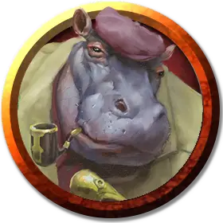

Коммодор Крукс
Commodore Krux
Средний Гуманоид, законно-добрый, именной НИП

Класс Доспеха 12
Хиты 75 (10к8 + 30)
Скорость 30 футов, плавая 30 футов
| мод | спас | ||
|---|---|---|---|
| СИЛ | 18 | +4 | +4 |
| ЛОВ | 14 | +2 | +2 |
| ТЕЛ | 17 | +3 | +3 |
| мод | спас | ||
|---|---|---|---|
| ИНТ | 11 | +0 | +0 |
| МДР | 12 | +1 | +1 |
| ХАР | 12 | +1 | +1 |
Чувства пассивное Восприятие 11
Языки Общий
Опасность 3 (700 опыта)
Бонус мастерства +2
Особенности
Знатоки огнестрельного оружия. Знание оружия позволяет гиффу игнорировать свойство «перезарядка» любого огнестрельного оружия.
Так держать!. Находясь на палубе корабля гифф совершает с преимущество проверки характеристик и спасброски против эффектов, которые могут сбить его с ног или столкнуть за борт.
Действия
Мультиатака. Гифф совершает две атаки Длинным мечом или Мушкетом.
Длинный меч. . Рукопашная атака оружием: +6 к попаданию, досягаемость 5 фт., одна цель. Попадание: 8 (1к8 + 4) рубящий урон или 9 (1к10 + 4) рубящий урон, если используется двумя руками.
Мушкет. . Дальнобойная атака оружием: +4 к попаданию, дистанция 40/120 фт., одна цель. Попадание: 8 (1к12 + 2) колющего урона.
Силовая граната. Гифф бросает гранату на расстояние до 60 футов, и та взрывается сферой радиусом 20 футов. Все существа в этой области должны совершить спасбросок Ловкости Сл 15, получая 17 (5к6) урона силовым полем при провале, или половину этого урона при успехе. После того как гифф бросит гранату, бросьте к6. Если выпадет «4» или меньше, у гиффа больше не остаётся гранат для броска.
Описание
Крукс — законно-добрый гифф-сослуживец (см. «Астральный зверинец Бу»), солдат, который верит, что дни его славы давно позади. Последние несколько лет он работал наёмником на Скале Брала и рядом с ней. В последнее время он всё чаще проводит время за кружкой, поскольку работы стало гораздо меньше.